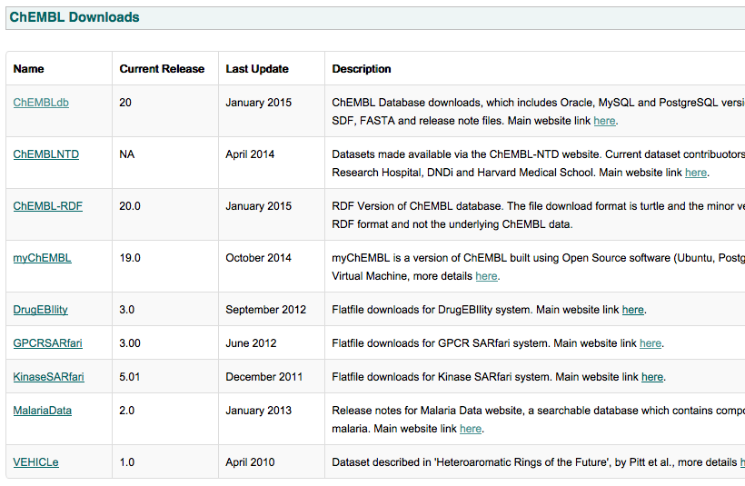
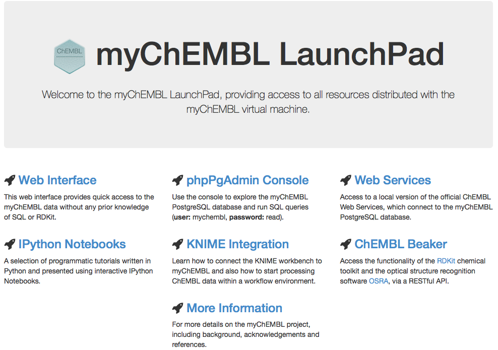

myChEMBL
primer
Michał Nowotka
ChEMBL Group
EMBL-EBI
WHAT'S myChEMBL?
- Self-contained package providing core ChEMBL resources.
- Little to no configuration required.
- Can be run on standard PC, server, cloud.
- Saves time and effort.
Use case:
How to use chembl
in your research?
Google it!
Google search
ChEMBL main web page
Left menu...
ChEMBL db...
FTP...
Choose version...
Download SQL dump...

Which DB engine to choose?
What about
cheminformatics operations?
- Fingerprints
- Substructure
- Similarity
We need a database cartridge
RDkit
How to install it?
Finally we have it!
This can take a lot of time:
- Choosing the right engine
- Installing it
- Downloading dumps
- Installing cartridge
- Computing fingerprints, indexes, etc.
Even if we do it...

We are data rich but information poor...
HOW myChEML CAN HELP?
Installing myChEMBL:

- +


Installing using VirtualBox
FTP...
Choose version...
Choose base OS...
Choose format...
Download VM image...
Download and install VirtualBox
Create new VM
Installing using Vagrant
- Install VirtualBox
- Install Vagrant
- In the terminal, run:
vagrant init chembl/mychembl_20_ubuntu vagrant upor:
vagrant init chembl/mychembl_20_centos vagrant up - Done!
Installing using Docker
- Requires 64-bit Linux box with modern kernel
- Smaller download
- Faster execution
myChEMBL
- Distribution channels:
- FTP
- Vagrant
- Operating systems:
- CentOS
- Ubuntu
- Virtualization techniques:
- Virtual Box
- QEMU/KML
- Docker Containers
What next?
- Start Virtual Machine
- Wait to boot
- Open your web browser and go to http://localhost:8000
myChEMBL LAUNCHPAD

phpPgAdmin
myChEMBL SAVES TIME:
- Choosing the right engine
- Installing it
- Downloading dumps
- Installing cartridge
- Computing fingerprints, indexes, etc.
What we really get:
IPython notebooks

IPython notebooks
- Collection of notebooks
- Explain how to leverage the data
- Various difficulty levels
- Open sourced
IPython notebooks examples
- Retrieving data (SQL, ORM, REST, Python client)
- Plotting (D3.js via mpld3, matplotlib)
- RDKit tutorial
- Machine learning (sklearn, scipy, numpy)
- Data mining
- Exploring patent data from SureChEMBL
Other stuff:
- Simple web interface
- RESTFul API
- KNIME intergation
Future
- NoSQL software/tutorials
- Compound registration software
- Bioactivity curation software
- Structure curation software
What we give you for free:
- Data
- Software
- Knowledge
Acknowledgements
- Francis Atkinson
- Mark Davies
- Nathan Dedman
- George Papadatos
- Gerard van Westen
- John Overington
- Rodrigo Ochoa
- Greg Landrum
Thank you!
Questions?